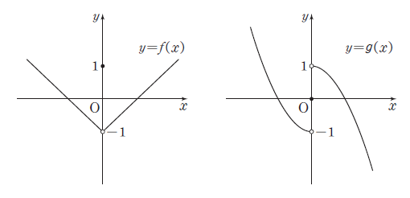

두 함수
,
에 대하여 <보기>에서 옳은 것만을 있는 대로 고른 것은?
[4점]
<보 기> | ||
ㄱ. 함수 는 실수 전체의 집합에서 연속이다. ㄴ. 함수 은 에서 불연속이다. ㄷ. 함수 가 에서 연속이 되도록 하는 양수 의 개수는 1이다. | ||
① ㄱ ② ㄱ, ㄴ ③ ㄱ, ㄷ
④ ㄴ, ㄷ ⑤ ㄱ, ㄴ, ㄷ

조건1에서 인 점 근처에서는 가 한 식으로 쓰이고, 가 연속이니까 이 식도 연속이야. 남은 곳은 식이 따로 정해진 하나야.
주의 자체는 에서 극한값과 함숫값이 달라서 불연속이야. 그런데 절댓값을 씌우면 과 의 크기가 같아져서 극한값과 함숫값이 일치하는 거야.
판단이면 은 항상 0보다 크니까, 에는 조건2의 일 때 식만 쓰여. 그래서 좌극한과 우극한을 따로 나눌 필요가 없어.
주의는 의 왼쪽과 오른쪽에서 식이 다르지만, 안쪽이 이면 오른쪽 식만 쓰이니까 그 차이가 나타나지 않아. 극한값과 함숫값이 같으면 연속이니까 '불연속이다'는 틀린 거야.
판단가 양수라서 근처의 는 모두 양수야. 그래서 로 바꿔 놓고, 조건2에서 식이 바뀌는 곳이 , 곧 니까 그 왼쪽과 오른쪽을 나눠 보면 돼.
는 조건1에서 일 때 한 식이라 근처에서 다항식으로 연속이야.
곱 의 좌극한, 우극한, 에서의 함숫값을 각각 구해 둔 거야. 는 에서 연속이라 세 곳에 같은 값이 곱해지고, 차이는 쪽에서만 생겨.
판단연속이려면 좌극한, 우극한, 함숫값 셋이 모두 같아야 해. 함숫값이 0으로 정해져 있으니까 두 극한이 둘 다 0이 되는 만 남아.
주의는 에서 좌극한과 우극한이 다른데, 이면 0이 곱해져서 그 차이가 없어지는 거야.